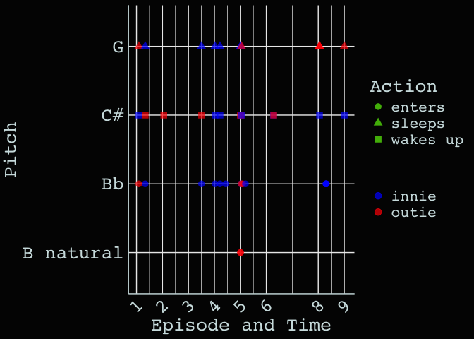

The goal of mdr is to provide data from the Severance TV show.
Installation
You can install the development version of mdr like so:
devtools::install_github("LucyMcGowan/mdr")Example
library(mdr)
df <- elevator_dings |>
dplyr::mutate(time_in_minutes = as.numeric(time) / 3600) |>
dplyr::mutate(episode_time = episode + time_in_minutes / 100) |>
dplyr::filter(!is.na(pitch), !is.na(io))
library(ggplot2)
ggplot(df, aes(x = episode_time, y = pitch, color = io, shape = action)) +
geom_point(size = 3, alpha = 0.7) +
scale_shape_manual(values = c("enters" = 16, "sleeps" = 17, "wakes up" = 15)) +
scale_color_manual(values = c("blue", "red")) +
scale_x_continuous("Episode and Time",
breaks = unique(df$episode),
labels = unique(df$episode)) +
labs(
y = "Pitch",
color = "",
shape = "Action"
) +
theme_mdr() +
theme(
text = element_text(size = 20),
axis.title = element_text(size = 20),
axis.text = element_text(size = 20),
axis.text.x = element_text(angle = 45, hjust = 1, size = 20))